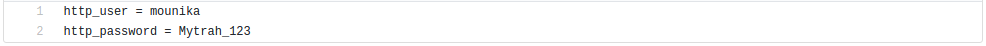
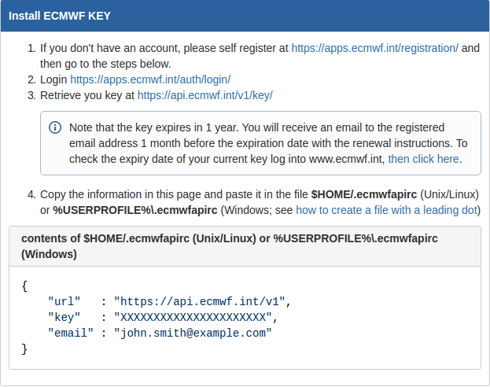

Default Settings
Username and Password for MERRA-2
- Inside the Prerequisite-Tools folder, there is a file named .wgetrc file.
Inside this file, change the http_user to the username as needed and http_password to the password as needed.

Username and Password for ERA
The username and password entry for ERA is more tricky. So follow the steps carefully.
Goto the ECMWF Website by clicking here and scroll down to read the steps titled Install ECMWF KEY. You should see something like this :

Note that the $HOME environment variable must be initialised. This is already done by default and its value can be checked. Then create the .ecmwfapirc file in that location.
Apart from this, another change needs to be made in the UsingERA.jsp file present in the Mytrah-Web-App folder. Change the line numbers 33 and 34 by replacing the username and password values with your account values.

This is all.